<!doctype html>
<html lang="en">
    <head>
        <meta charset="utf-8">
        <title>reveal-md</title>
        <link rel="stylesheet" href="css/reveal.css">
        <link rel="stylesheet" href="css/theme/black.css" id="theme">
        <!-- For syntax highlighting -->
        <link rel="stylesheet" href="lib/css/zenburn.css">

        <!-- If the query includes 'print-pdf', use the PDF print sheet -->
        <script>
          document.write( '<link rel="stylesheet" href="css/print/' + ( window.location.search.match( /print-pdf/gi ) ? 'pdf' : 'paper' ) + '.css" type="text/css" media="print">' );
        </script>
    </head>
    <body>

        <div class="reveal">
            <div class="slides"><section  data-markdown><script type="text/template"> # Übungsblatt 7

<small>by Simon Selg, Danny Stoll</small>
</script></section><section  data-markdown><script type="text/template">
## Gliederung

- [Organisatorisches](/exc07.md#/2)
  - [Testat](/exc07.md#/3)
- [Quiz 1](/exc07.md#/4)
- [Blatt 6](/exc07.md#/5)
	- [Aufgabe 1](/exc07.md#/6)
	- [Aufgabe 2](/exc07.md#/7)
	- [Aufgabe 3](/exc07.md#/8)
	- [Aufgabe 4](/exc07.md#/9)
- [Blatt 8](/exc07.md#/10)

</script></section><section ><section data-markdown><script type="text/template">
## Organisatorisches
</script></section><section data-markdown><script type="text/template">
### Anwesenheit

</script></section><section data-markdown><script type="text/template">
### Gesamtstand


```Python
>>> len([_ for gr in grades if gr < 70]) # Failing active students
8

>>> len(grades)                          # All active students
17
```
</script></section><section data-markdown><script type="text/template">
### Bonus Punkte
Spezielle Aufgaben

$\Rightarrow$ speziell schwierig
</script></section><section data-markdown><script type="text/template">
### Feedback

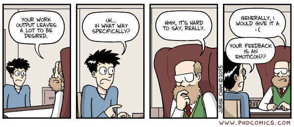
</script></section></section><section ><section data-markdown><script type="text/template">
### Testat
</script></section><section data-markdown><script type="text/template">
### Eckdaten

- 12.01.2017 nach TI-Vorlesung
- Klausurniveau
- 60 Minuten
</script></section><section data-markdown><script type="text/template">
### Inhalt

- Gesamter Stoff bis Weihnachtspause
- Pro Kapitel mind. 1 Aufgabe
- Beispiele folgend
</script></section><section data-markdown><script type="text/template">
### 2. Kodierung

- Huffman
- Kompl. Beweise
- RETI Kodierung
</script></section><section data-markdown><script type="text/template">
### 3. Kombinatorische Logik

- PLAs, Hypercubes
- McCluskey
- Primimplikanten Tafel
- CRA/CSA/Multiplizierer
- Boolsche Algebra Beweise
- Schaltkreise zeichnen und formalisieren
</script></section><section data-markdown><script type="text/template">
### 4. Seq. Logik

- Automaten
- Sequentielle Synthese
- RETI Datenpfade
</script></section><section data-markdown><script type="text/template">
### 5. Timing

- Timingdiagramme
- Spikefreie Schaltkreise
- RETI Datenpfade mit Timing
</script></section></section><section ><section data-markdown><script type="text/template">
## <a href="../quiz1.pdf">Quiz 1</a>


</script></section><section data-markdown><script type="text/template">
### Lösungen

- Analog
- [ti-tutorial.github.io](https://ti-tutorial.github.io)
- Mit Korrekturhinweisen

</script></section></section><section ><section data-markdown><script type="text/template">
## Blatt 6
</script></section><section data-markdown><script type="text/template">
### Statistiken

- $\varnothing_{Punkte} \approx 12.8$
- $\sigma_{Punkte} \approx 2.1$
</script></section><section data-markdown><script type="text/template">
### Klausur Relevanz

1. $\quad 7/10$
1. $\quad 9/10$
1. $\quad 6/10$
1. $\quad 2/10$
</script></section><section data-markdown><script type="text/template">
### Erste Aufgabe

- [Aufgabe 1](/exc07.md#/6)
- [Aufgabe 2](/exc07.md#/7)
- [Aufgabe 3](/exc07.md#/8)
- [Aufgabe 4](/exc07.md#/9)
</script></section></section><section ><section data-markdown><script type="text/template">
## Aufgabe 1
</script></section><section data-markdown><script type="text/template">
### Mealy Automat

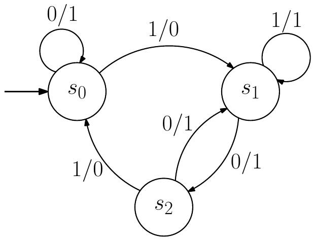

</script></section><section data-markdown><script type="text/template">
### Häufige Fehler

- Startzustand nicht markiert
- Ausgabe bei leerer Eingabe (im St.zustand)
</script></section><section data-markdown><script type="text/template">
### Nächste Aufabe

- [Aufgabe 2](/exc07.md#/7)
- [Aufgabe 3](/exc07.md#/8)
- [Aufgabe 4](/exc07.md#/9)
- [Blatt 8](/exc07.md#/10)

</script></section></section><section ><section data-markdown><script type="text/template">
## Aufgabe 2
</script></section><section data-markdown><script type="text/template">
### Zustandstafel

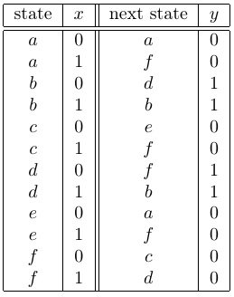
</script></section><section data-markdown><script type="text/template">
### a) Verifizierung

- Jeder Knoten 2 Ausgänge?
</script></section><section data-markdown><script type="text/template">
### b) Äquivalenzen

$$
a \equiv c \equiv e
$$
</script></section><section data-markdown><script type="text/template">
### b) Reduzierter Automat


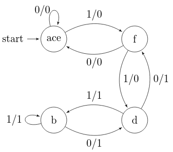

</script></section><section data-markdown><script type="text/template">
### c) Kodierung

$$
\begin{align}
ace: \quad \quad & q\_1 = 0, \quad q\_0 = 0 \\\\
f: \quad \quad & q\_1 = 0, \quad q\_0 = 1 \\\\
b: \quad \quad & q\_1 = 1, \quad q\_0 = 0 \\\\
d: \quad \quad & q\_1 = 1, \quad q\_0 = 1 \\\\
\end{align}
$$
</script></section><section data-markdown><script type="text/template">
### c) Übergangstabelle

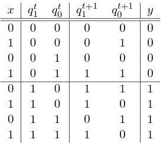
</script></section><section data-markdown><script type="text/template">
### c) Schaltwerk Konstruktion

$$
\begin{align}
y &= q\_1 \\\\
&\\\\
q\_0’ &= x \overline{q\_1} \\ \overline{q\_0} + x \overline{q\_1} q\_0 + \overline{x} q\_1 \overline{q\_0} + \overline{x} q\_1 q\_0  \\\\
&= x \overline{q\_1} + \overline{x} q\_1 \\\\
&= x \oplus q_1
\end{align}
$$
</script></section><section data-markdown><script type="text/template">
### c) Schaltwerk Konstruktion

$$
\begin{align}
q\_1’ & \\ = q\_1 \cdot \overline{\overline{x} q\_1 q\_0}  + x q\_0\\\\
&\stackrel{DM}{=} q\_1 \cdot (x + \overline{q\_1} + \overline{q\_0}) + xq\_0 \\\\
&\stackrel{D/K}{=} q\_1 x + q\_1 \overline{q\_0} + x q\_0\\\\
& \\ = q_1 \cdot (x + \overline{q_0}) + x q_0
\end{align}
$$
</script></section><section data-markdown><script type="text/template">
### c) Minimales Schaltwerk Konstruktion

$$
\begin{align}
q\_1’ &= q\_1 \oplus (q\_0 \cdot (x \oplus q\_1))
\end{align}
$$
</script></section><section data-markdown><script type="text/template">
### c) Schaltwerk

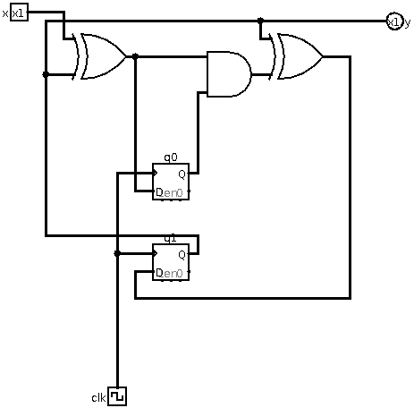
</script></section><section data-markdown><script type="text/template">
### Häufige Fehler

- a) Startzustand nicht markiert
- c) Konstruktion nicht angegeben
- c) Kodierung nicht angegeben
- c) Formeller McCluskey
</script></section><section data-markdown><script type="text/template">
### Nächste Aufabe

- [Aufgabe 1](/exc07.md#/6)
- [Aufgabe 3](/exc07.md#/8)
- [Aufgabe 4](/exc07.md#/9)
- [Blatt 8](/exc07.md#/10)
</script></section></section><section ><section data-markdown><script type="text/template">
## Aufgabe 3
</script></section><section data-markdown><script type="text/template">
### a) n-Bit Dekodierer

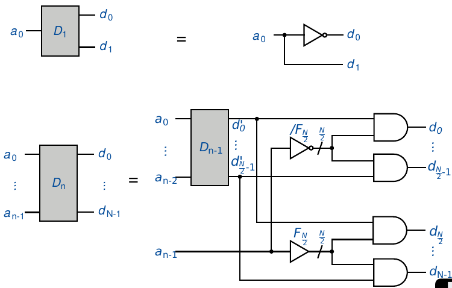
</script></section><section data-markdown><script type="text/template">
### a) 2-Bit Dekodierer
</script></section><section data-markdown><script type="text/template">
### b) n-Bit SRAM

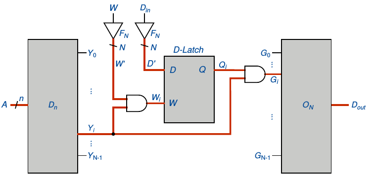
</script></section><section data-markdown><script type="text/template">
### b) 2-Bit SRAM

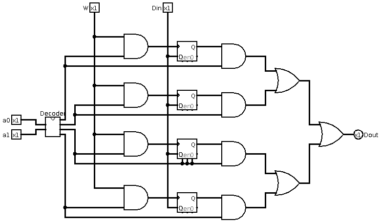
</script></section><section data-markdown><script type="text/template">
### c) Funktionstabelle

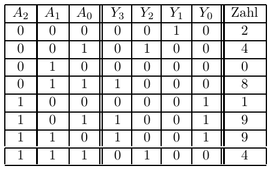
</script></section><section data-markdown><script type="text/template">
### Nächste Aufabe

- [Aufgabe 1](/exc07.md#/6)
- [Aufgabe 2](/exc07.md#/7)
- [Aufgabe 4](/exc07.md#/9)
- [Blatt 8](/exc07.md#/10)

</script></section></section><section ><section data-markdown><script type="text/template">
## Aufgabe 4
</script></section><section data-markdown><script type="text/template">
### Schwache Induktion

$$
\begin{align}
& \color{red}{ IA:}  & A(\lambda)  \text{ gilt} . \\\\
& \color{red}{ IV:} & A \text{ gelte für ein }  n  \\\\
& \color{red}{ IS:}  & A(n) \rightarrow A(n+1)  \\\\
& \color{red}{  \Rightarrow }  & A(n) \text{ gilt }   \forall n\geq\lambda \\\\
\end{align}
$$
</script></section><section data-markdown><script type="text/template">
### Starke Induktion

$$
\begin{align}
& \color{red}{ IA:}  & A(\lambda)  \text{ gilt} . \\\\
& \color{red}{ IV:} & A \text{ gelte } \forall n’ < n  \\\\
& \color{red}{ IS:}  & \forall n’<n: A(n’) \rightarrow A(n)  \\\\
& \color{red}{  \Rightarrow }  & A(n) \text{ gilt }   \forall n\geq\lambda \\\\
\end{align}
$$
</script></section><section data-markdown><script type="text/template">
#### $\color{red}{\mathrm{Z\kern-.3em\raise-0.5ex\hbox{Z}}}: \forall s \in \mathbb{N}, \quad N \in \\{ 10^{s-1}, \ldots, 10^s \\}, \quad \exists \text{ Baum } T(N):$

$$
\begin{align}
& \color{red}{ (\emptyset) }& \forall \text{ Knoten } v: d^+(v) \leq 10 \\\\
& \color{red}{ \text{(i)} }& \text{ N Blätter} \\\\
& \color{red}{ \text{(ii)} }& \text{ Wurzel w, Blatt b } \Rightarrow |\text{Pfad}(w, b)| = s \\\\
& \color{red}{ \text{(iii)} }& \text{ Anzahl innerer Knoten} \leq \frac{N}{9} + s \\\\
\end{align}
$$
</script></section><section data-markdown><script type="text/template">

### Beispiel $N=11$

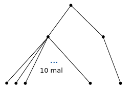
</script></section><section data-markdown><script type="text/template">
### $\color{red}{IA:} \\  (s=1) \Rightarrow N \in \\{ 2, \ldots, 10 \\}$

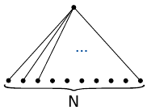

$$
\begin{align}
& \color{red}{(i) }&&  \text{trivialer Weise} \\\\
& \color{red}{(ii)} && \text{trivialer Weise} \\\\
& \color{red}{(iii)}&&  \forall N:\quad I(T(N)) = 1 \leq \frac{N}{9} + 1
\end{align}
$$

</script></section><section data-markdown><script type="text/template">
### Induktionsvorraussetzung

$\forall s' < s:  \exists T(N)$ sodass (i)-(iii).
</script></section><section data-markdown><script type="text/template">
### $\color{red}{IS:} \\ $ Vorüberlegung

- Sei $N = a \cdot 10^{s-1} + d$
  - $a \in \\{1, \ldots, 9\\} $
  - $d \in \\{1, \ldots, 10^{s-1}\\} $
</script></section><section data-markdown><script type="text/template">
### $\color{red}{IS:} \\ $ Konstruktion $T_{s}(N)$

- Sei $A := T(s-1)$
- Sei $D := T(d)$ und $t := Tiefe(D) $

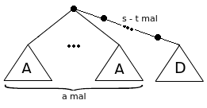
</script></section><section data-markdown><script type="text/template">
### $\color{red}{IS:} T_{s}(N)$ erfüllt $(i)$

$$
\begin{align}
Bl(T_s(N) & = a \cdot Bl(A) + Bl(D) \\\\
& = a \cdot 10^{s-1} + d \\\\
& \stackrel{pD}{=} N
\end{align}
$$
</script></section><section data-markdown><script type="text/template">
### $\color{red}{IS:} T_{s}(N)$ erfüllt $(ii)$

- Pfad über $A$: per IV
- Pfad $p$ über $D$: $$|p| = (s-t) + T(D) = s $$

</script></section><section data-markdown><script type="text/template">
### $\color{red}{IS:} T_{s}(N)$ erfüllt $(iii)$

$$
\begin{align}
I(T(N)) &= a \cdot I(T(A)) + I(T(D)) + (s-t) + 1 \\\\
&= a \cdot \frac{10^{s-1} - 1}{9} + I(T(D)) + (s-t) + 1 \\\\
&\stackrel{IV}{\leq} \frac{a \cdot 10^{s-1} - a}{9} + \left(\frac{d}{9} +  t \right) + (s-t) + 1 \\\\
&\leq \frac{N}{9}+d
\end{align}
$$
<div align="right">$\square$</div></script></section><section data-markdown><script type="text/template">
### Häufige Fehler

- Induktionsstruktur
- Kein Ansatz
</script></section><section data-markdown><script type="text/template">
### Nächste Aufabe

- [Aufgabe 1](/exc07.md#/6)
- [Aufgabe 2](/exc07.md#/7)
- [Aufgabe 3](/exc07.md#/8)
- [Blatt 8](/exc07.md#/10)

</script></section></section><section ><section data-markdown><script type="text/template">
## Blatt 8

- reti.txt
- Neumi: Grafischer Simulator für ReTI
</script></section><section data-markdown><script type="text/template">
### Klausur Relevanz

1. $\quad 7/10$
1. $\quad 7/10$
1. $\quad 9/10$
1. $\quad 5/10$
</script></section></section><section  data-markdown><script type="text/template">
## Sonstiges
</script></section><section  data-markdown><script type="text/template">
## Quellen

- [Late to Class](http://cdn.ebaumsworld.com/mediaFiles/picture/2194615/83786465.jpg)
- [Feedback](http://phdcomics.com/comics/archive/phd021615s.gif)
- [Get tested](https://encrypted-tbn0.gstatic.com/images?q=tbn:ANd9GcRiL9AVogcE5DKL6RbIKQEdtKKuw9IhYq-eFJYY8V_EouWz9IVHOQ)
</script></section></div>
        </div>

        <script src="lib/js/head.min.js"></script>
        <script src="js/reveal.js"></script>

        <script>
            function extend() {
              var target = {};
              for (var i = 0; i < arguments.length; i++) {
                var source = arguments[i];
                for (var key in source) {
                  if (source.hasOwnProperty(key)) {
                    target[key] = source[key];
                  }
                }
              }
              return target;
            }

            // Optional libraries used to extend on reveal.js
            var deps = [
              { src: 'lib/js/classList.js', condition: function() { return !document.body.classList; } },
              { src: 'plugin/markdown/marked.js', condition: function() { return !!document.querySelector('[data-markdown]'); } },
              { src: 'plugin/markdown/markdown.js', condition: function() { return !!document.querySelector('[data-markdown]'); } },
              { src: 'plugin/highlight/highlight.js', async: true, callback: function() { hljs.initHighlightingOnLoad(); } },
              { src: 'plugin/notes/notes.js', async: true, condition: function() { return !!document.body.classList; } },
              { src: 'plugin/math/math.js', async: true },
              { src: 'plugin/math/math.js', async: true }
            ];

            // default options to init reveal.js
            var defaultOptions = {
              controls: true,
              progress: true,
              history: true,
              center: true,
              transition: 'default',
              dependencies: deps,
              math: {
                mathjax: 'https://cdn.mathjax.org/mathjax/latest/MathJax.js',
                config: 'TeX-AMS_HTML-full'
              }
            };

            // options from URL query string
            var queryOptions = Reveal.getQueryHash() || {};

            var options = {};
            options = extend(defaultOptions, options, queryOptions);
            Reveal.initialize(options);
        </script>

          <script src="/scripts/presentations"></script>
    </body>
</html>
